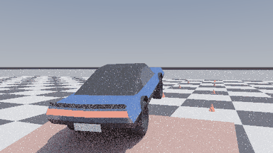

Every image, GIF and MP4 here was produced in this sandbox by CPU reference renderers that read the project's own headers. Nothing is a screenshot of the Vulkan app. The GPU side is simulated on the CPU.
Project-Zero-PathCompare, a CPU mirror: the raster path is a z-buffer
with the engine's light list, the SDF path marches a DistanceAtlasSpace volume I bake. Shading is my
path tracer, not the engine's material model. Scene, geometry, camera and light directions are the project's.DriveCourse.h::EmitCourseTriangles, body/rim/tyre meshes
from the generated ControlVehicle*.inl, pose from the real VehicleSolver. Shading is mine;
geometry and dynamics are the project's._Delivery/PROOF.md section 4 and the CSVs in Project-Drive/.
The car is driven by the real VehicleSolver over the real course. At t = 4.30 s the scripted drive has it leave the ramp at 11.26 m/s; body rates (2.5, -7.0, 1.2) rad/s are injected there so it tumbles. The CONTROL clip is the byte-identical drive with no spin. Every frame is an independent render.

Project-Zero's showcase scene rendered by the same camera through each path: the z-buffer raster path, SDF GI marched through the baked distance atlas, and the exact ray-traced reference.
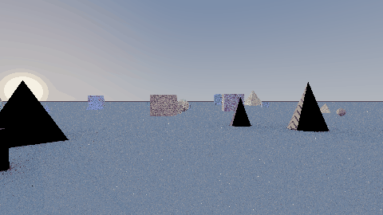

Same frame, three paths. reference = primary ray + exact ray-traced shadow/bounce. sdf = primary ray with sun shadow and sky/GI marched through the baked DistanceAtlasSpace. raster = z-buffer, sun + moon + the first N emissive triangles, one coarse 256x256 sun shadow map stretched over 480 m.
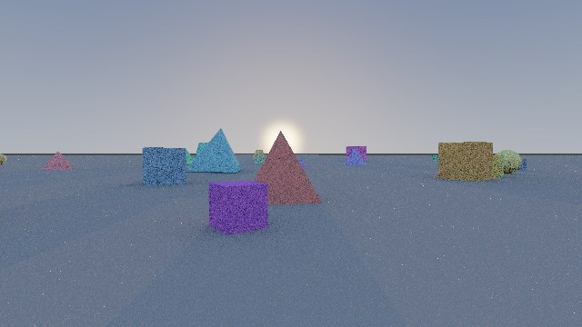
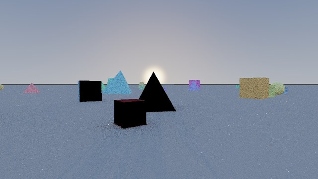
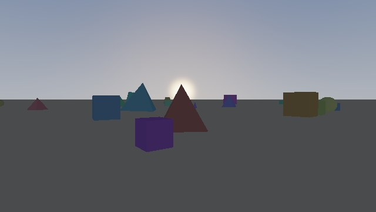
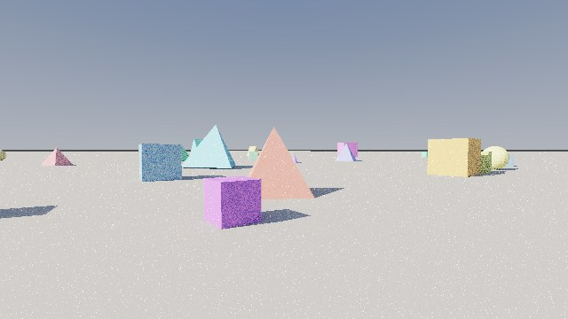
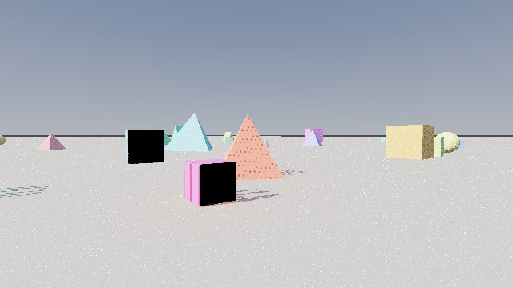
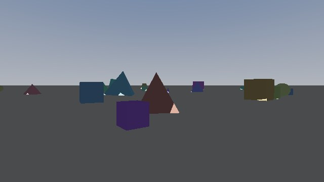
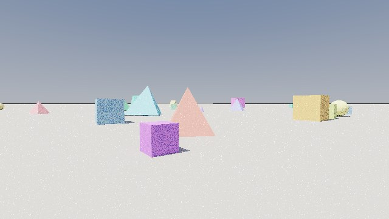
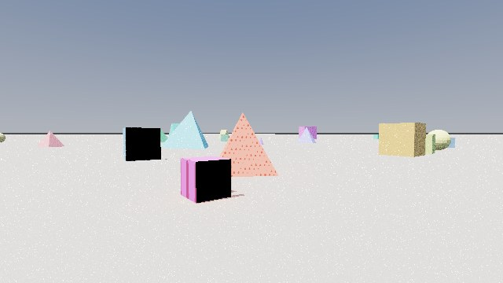
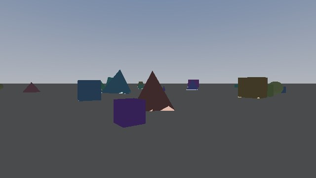
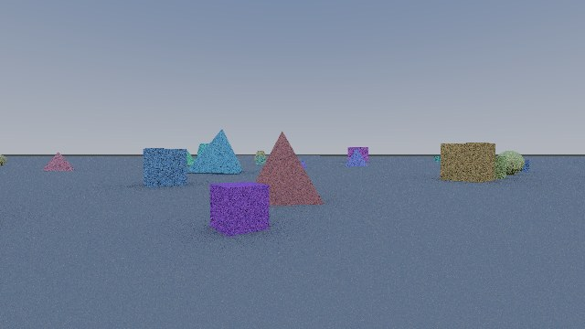
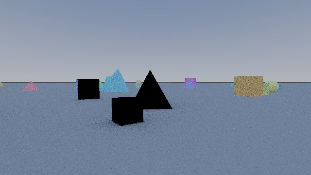
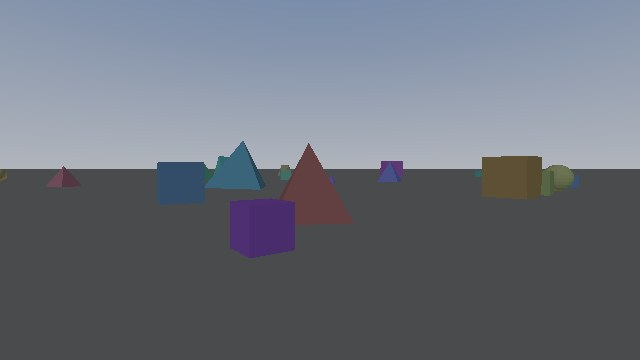
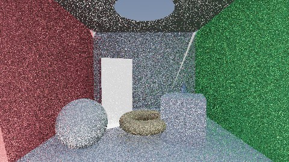
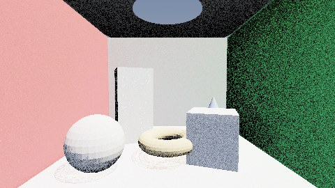
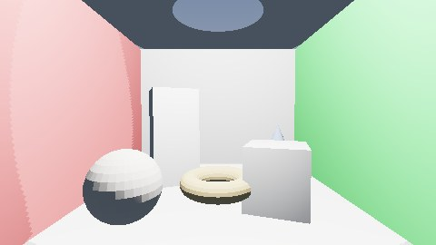
A slice through the baked DistanceAtlasSpace volume, so the field the SDF GI marches can be looked at rather than taken on trust.
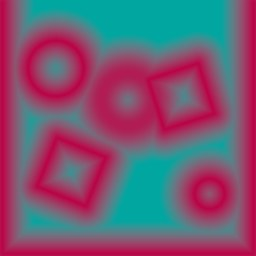
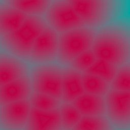


Per-step, per-wheel, 240 Hz: contact node count, XPBD contact lambda, deepest penetration, the per-family constraint residuals the solver is left holding, rim-flange bottoming, and the reaction force.


Real course geometry, real car mesh, real VehicleSolver pose.


Real course geometry, real car mesh, real VehicleSolver pose.
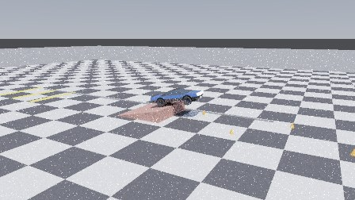
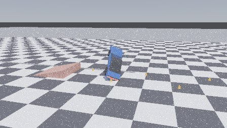
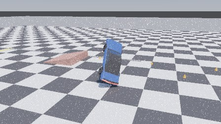
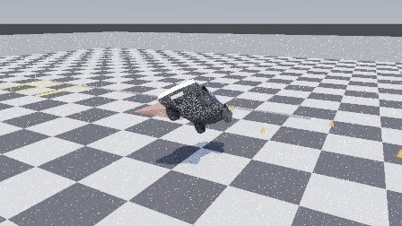
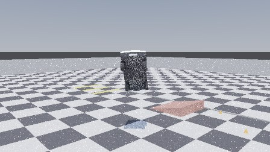
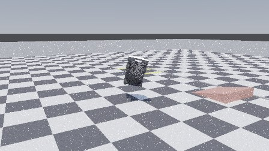
Real course geometry, real car mesh, real VehicleSolver pose.
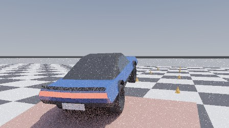
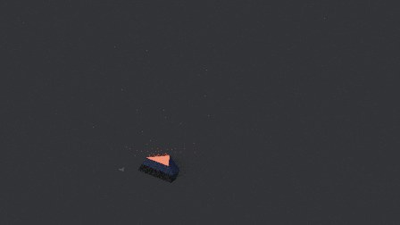
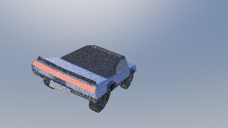
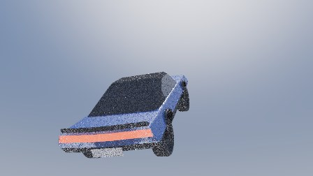
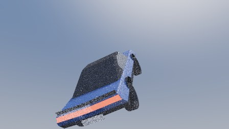
Real course geometry, real car mesh, real VehicleSolver pose.

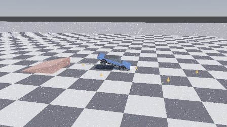
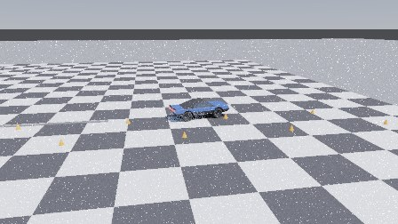
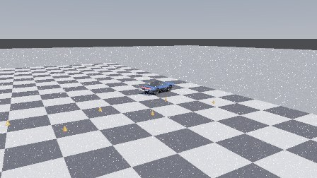
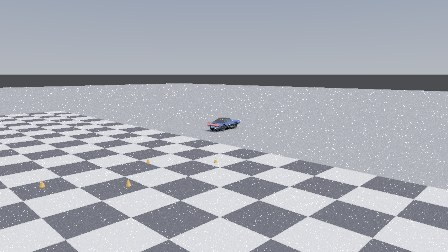
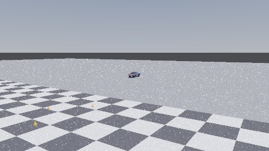
From DriveTelemetry and the render timing CSVs.